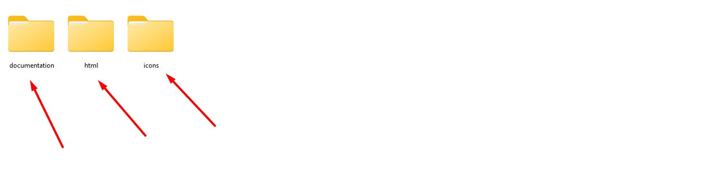
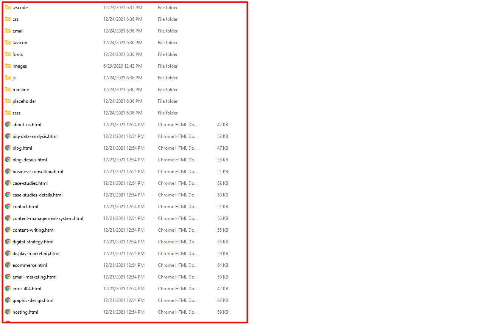
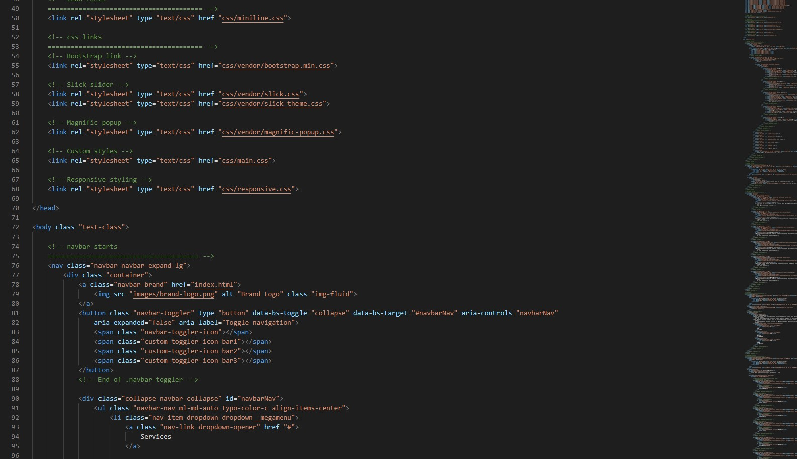
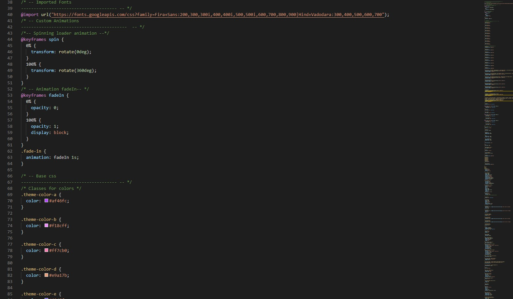
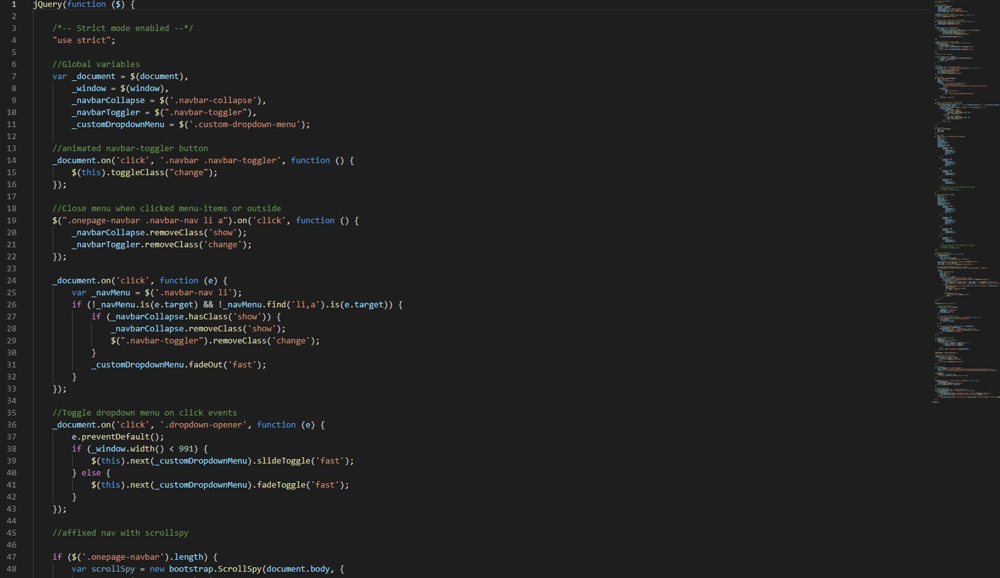
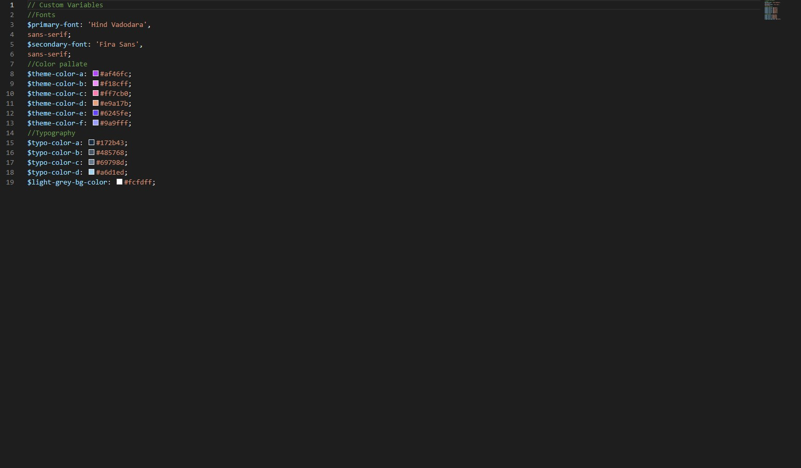
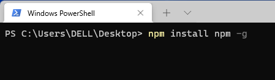
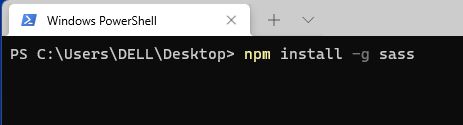

1. Introduction
We would like to thank you for choosing Cynic.
We made Cynic from the ground-up with flexibility in mind. Each element of Cynic
is extremely customizable, where you can make
Cynic to reflect your own
branding styles.
The guide gives you detailed methodologies about how you can customize Cynic and make it fit your brand perfectly!
1.2 What's Included
After purchasing Cynic template on themeforest.net with your Envato account, go to your Download page. You can choose to download Cynic template only or the entire Cynic template package which contains the following files:
- Cynic template: A .zip file with all .html files with all necessary assets.
- Documentation: An HTML format documentation.
- Licensing.
1.3. How to Install Cynic Website Templates
Installing a Cynic template is not like WordPress or CMS theme installation, actually, installation keyword does not go with Cynic template. Why? because you don’t install anything, yes Cynic or HTML templates are automatically rendered by the browser.
1.1 Editing Cynic Template
Before all that you have to edit your template and place your own contents by replacing old demo contents, in this case, you will need a code editor such as – VScode, Sublime Text, etc. When template editing is done using editor, save the files and folder and go ahead to upload template files on live server.
1.2 Uploading to Live Server Using FTP:
First of all, If you don’t have your template on your computer, download Cynic template to get started, when download/purchase complete you will get a package like this screenshot (after unzip).
1.3 Package comes with documentation unzip the download package, you’ll found a folder with all template files, like above screenshot.
1.4 Now, login to your hosting control panel or FTP client, such as: FileZilla, CyberDuck etc. and upload template files on your server root.
1.5 Once all files are uploaded, go to www.yoursite.com/index.html you can see your the homepage, make sure the initial page is named as index.html
2. Template Structures
2.1. HTML Structure
This template is a fixed layout with four columns. The main contents are inside the 'body' tag divided into differt section (i.e. header, banner, services,... footer etc.). The general template structure is the same throughout the template. Here is the general structure.
2.2. CSS Files and Structure
We are using one customed CSS files (main.css) and several vendor css files. CSS file structure is as follows:
2.3. JavaScript Files
There is a custom .js file named main.js and are several vendor js files as plugins. We are using jQuery(a javascript library) instead of vanilla javascript. Our file structure is a follows:
3. Change Contents
3.1. Changing Logo
- Open the folder called image.
- Find the .png files called brand-logo.png, footer-logo.png.
- Replace the files with your own logo.
- Make sure that the file names does not change.
3.2. Changing Copyright
- Open the .html file to your code editor and go to the footer area
3.3. Changing Images
To change any images of the website
- Carefully collect the source name of the image (i.e. brand-logo.png)
- Open the folder called image.
- Find the particular image file.
- Replace the file with your image.
- Make sure that the file name does not change.The file name should be the same.
Example: Suppose you want to change the following image file:
You have to do the following to change this image with your own image:
- Open the folder called image.
- Find the particular image file called brand-logo.png
- Replace the file with your image
- Make sure that the file name does not change.
Note: Images seen in the live
preview are only set for preview purposes.
They are not included in the download
files.
3.4. Changing default template colors
- Open the variables.scss file from sass folder with a text-editor.
- Change the right-side values of the variables to change any default colors of your site.
- Save your file.
Have a look at the following image for a visual description:
3.5. How to Compile Sass to CSS
There are many ways to compile Sass to CSS. Here is a guideline on how to compile Sass to CSS via the command line. Please follow this simple step:
- If your computer doesn't have Node.js Please Download and Install Node.js from the official website: https://nodejs.org/
- If you have an older version of NPM then you can update it to the latest version using the following command.
npm install npm -g - Node-sass is an NPM package that compiles Sass to CSS (which it does very quickly too). To install node-sass run the following command in your terminal:
npm install -g sass - Go to the project folder and open the terminal command this line :
sass --watch input.scss output.css
- For more details visit the official site: https://sass-lang.com/guide
3.6. Changing Email Settings of the Contact Form
- Go to main folder
- Open email > email.php
- Follow instructions in image below:
3.7. Revolution Sider Customization
- Open the .html file with a text-editor from where you want to change any Revolution Sider
- You can customize each slider seeing this example
- If you want to know more please see the official documentation: Click here
4. Sources and Credits
We've used the following fonts, free icons and plugins as listed:
5. Support
Support Scope
Included in Free Support Scope:
- Fixing bugs
- Helping clients in changing site contents by sending instructions that couldn’t be covered by documentation
NOT Included in Free Support Scope:
- Any type of custom changes
- Any type of request to update clients’ site contents
Paid Support Scope:
Paid support is not a part of Free Support when you purchase the template from templateForest. We understand that some clients need custom changes while using our template. For that we kept an option for paid support which includes:
- Custom change request
- Custom pages
- Custom features
We kept a flat rate for our paid support which is $35/hour.
Support Ticket
Please send your support request here. You will response within 1 business day.
Regards,
Axilthemes Support Team